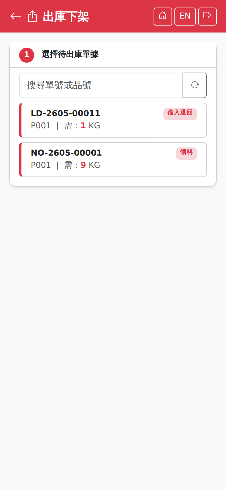

與入庫上架對稱的兩步驟畫面：先選一張待出庫的單據，再指定來源儲位與數量。來源單據同樣由桌機開立（領料、出貨、報廢、借出、樣品出貨、採購退貨等）。The mirror image of put-away, in two steps: pick an outbound document, then give the source location and the quantity. The documents are likewise raised on the desktop (material issues, shipments, scrap, loans, sample shipments, purchase returns and so on).

出庫下架畫面（步驟一：選擇待出庫單據）Pick screen (step 1: choosing an outbound document)
步驟一：選擇待出庫單據Step 1: choose the document
清單列出所有待出庫的單據行，顯示單號、品號與需下架數量，並以類型徽章標示是領料、出貨還是其他用途。可用查詢列輸入單號或品號縮小範圍。The list shows every outbound document line with its number, product and required quantity, and a type badge saying whether it is an issue, a shipment or something else. Narrow it with the search bar.
步驟二：確認下架Step 2: confirm the pick
1確認「單號」、「品號」與「需下架」數量。Check the "Doc No.", "Product" and "Required" quantity.
2畫面中段的「各儲位庫存」會自動列出這個品號在哪些儲位還有多少庫存，據此決定去哪個儲位取料。The "Stock by Location" section lists where this product is held and how much is at each location, so you can decide where to pick from.
3在「來源儲位」掃描或輸入儲位代碼，並填「下架數量」。點「各儲位庫存」的一列也會帶入儲位（有批號的列一併帶入批號）。整箱下架時直接掃箱子的 QR：系統帶出箱子所在儲位與批號，數量取箱內與需下架較小者。Scan or type the code in "Source Location" and enter the "Pick Qty". Tapping a row under Stock by Location fills in the location too (and the lot, for rows that have one). To pick a whole box, scan the box QR: the box's location and lot are filled in, and the quantity is the smaller of the box contents and the quantity required.
4點「確認下架」，成功後提示「下架成功」。Tap "Confirm Pick"; on success it shows "Pick successful".
若各儲位庫存顯示「無庫存記錄」，代表這個品號目前在任何儲位都沒有庫存，請先確認是否需要先入庫或調撥，不要硬填儲位送出。If Stock by Location says "No stock records", the product has no stock in any location. Check whether it needs to be received or transferred first rather than forcing a location through.
同一行可以分多次從不同儲位下架，需下架數量會逐次遞減。One line can be picked from several locations in turn; the required quantity counts down each time.
斷線時When the connection drops
與入庫上架相同：清單需要連線才載得出來；送出時若剛好斷線，會先暫存在手機，恢復連線後自動送出。詳見斷線保護。As with put-away: the list needs a connection to load, and if the connection drops just as you submit, the entry is saved on the phone and sent automatically when it returns. See Disconnection protection.
SmartFactory MES 系統使用手冊 | 如需協助請聯繫系統管理者SmartFactory MES User Manual | Contact your system administrator if you need help